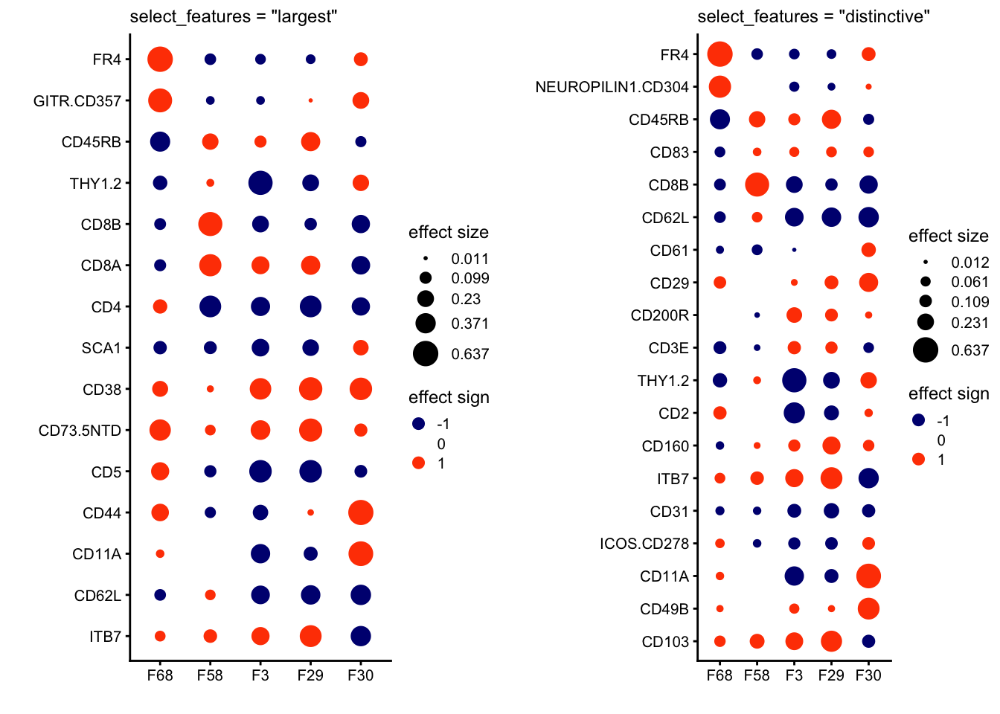
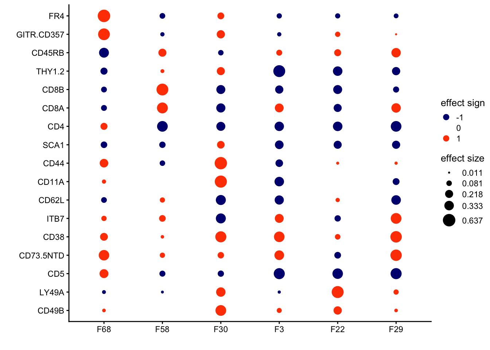
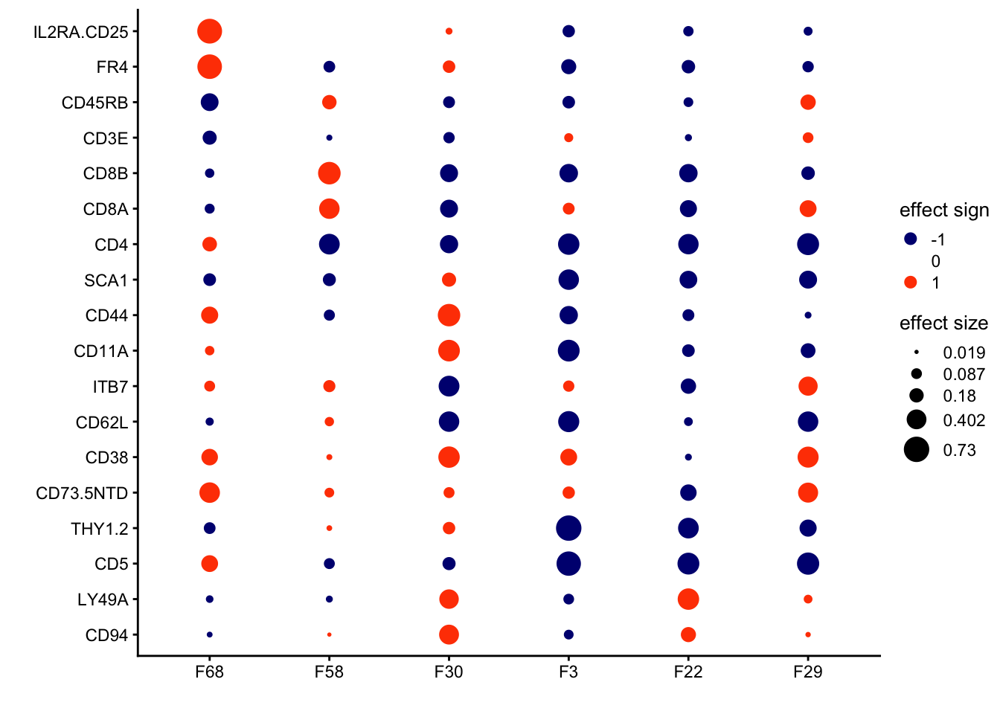
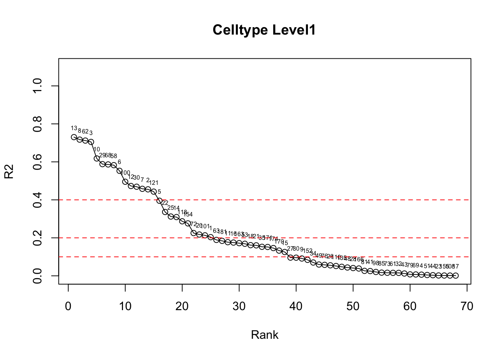
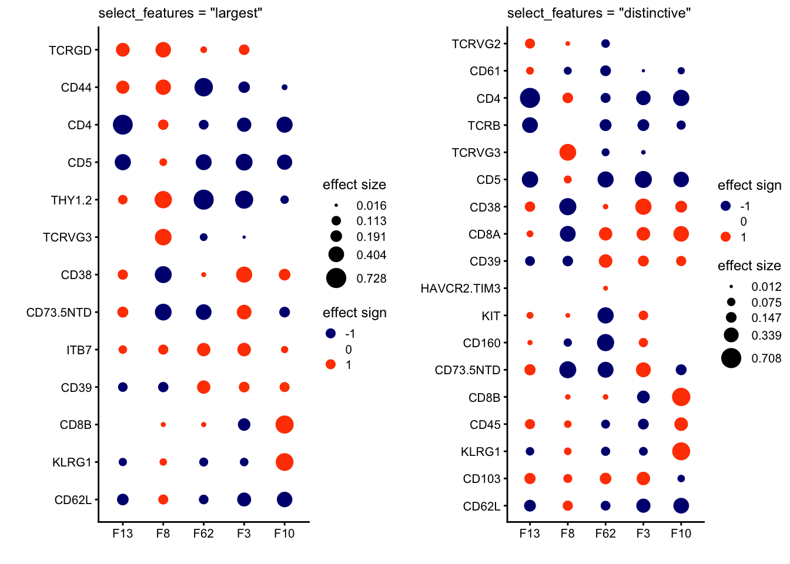
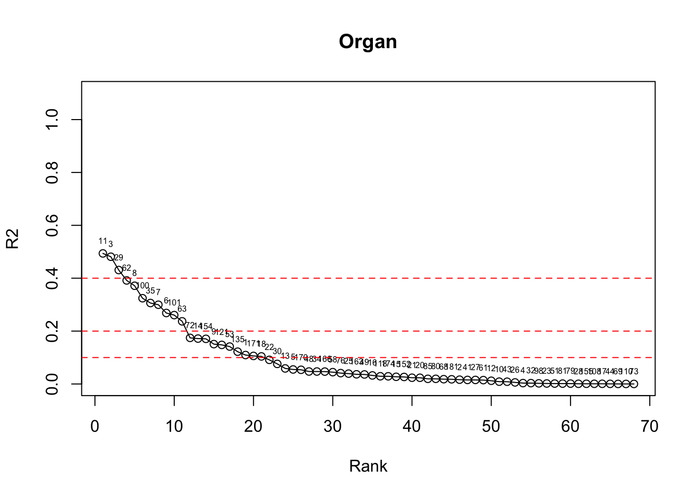
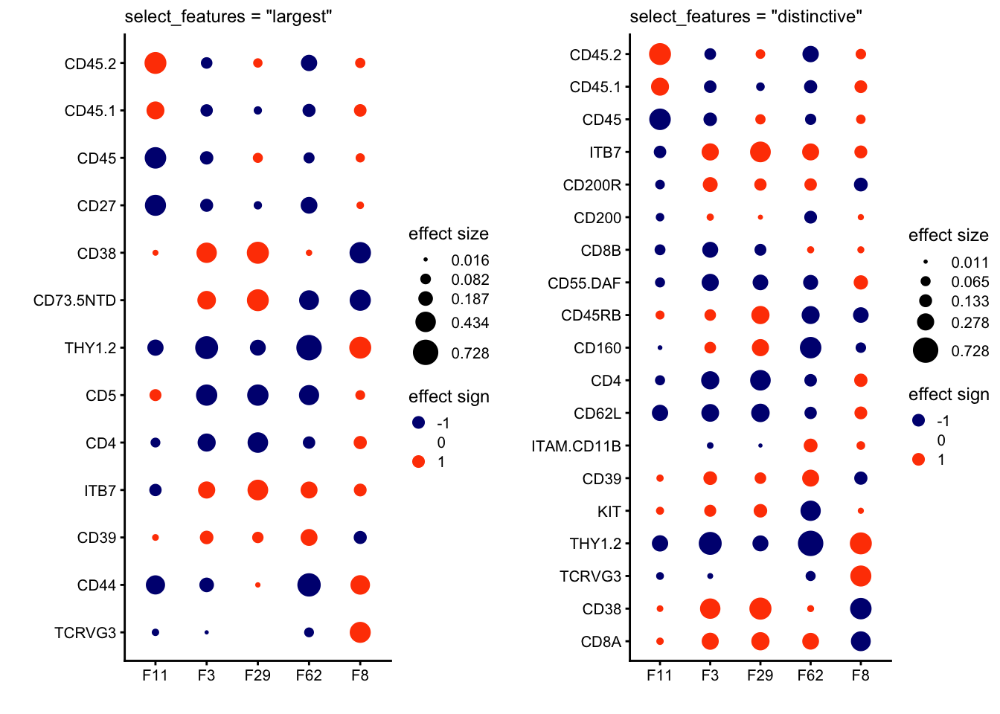

Linking GEPs to protein
Ziang Zhang
Last updated: 2025-10-29
Checks: 7 0
Knit directory: immgen-t-factors/analysis/
This reproducible R Markdown analysis was created with workflowr (version 1.7.2). The Checks tab describes the reproducibility checks that were applied when the results were created. The Past versions tab lists the development history.
Great! Since the R Markdown file has been committed to the Git repository, you know the exact version of the code that produced these results.
Great job! The global environment was empty. Objects defined in the global environment can affect the analysis in your R Markdown file in unknown ways. For reproduciblity it’s best to always run the code in an empty environment.
The command set.seed(1) was run prior to running the
code in the R Markdown file. Setting a seed ensures that any results
that rely on randomness, e.g. subsampling or permutations, are
reproducible.
Great job! Recording the operating system, R version, and package versions is critical for reproducibility.
Nice! There were no cached chunks for this analysis, so you can be confident that you successfully produced the results during this run.
Great job! Using relative paths to the files within your workflowr project makes it easier to run your code on other machines.
Great! You are using Git for version control. Tracking code development and connecting the code version to the results is critical for reproducibility.
The results in this page were generated with repository version b1f2ac8. See the Past versions tab to see a history of the changes made to the R Markdown and HTML files.
Note that you need to be careful to ensure that all relevant files for
the analysis have been committed to Git prior to generating the results
(you can use wflow_publish or
wflow_git_commit). workflowr only checks the R Markdown
file, but you know if there are other scripts or data files that it
depends on. Below is the status of the Git repository when the results
were generated:
Ignored files:
Ignored: .Rhistory
Ignored: .Rproj.user/
Ignored: analysis/.Rhistory
Ignored: analysis/figure/
Ignored: analysis/site_libs/
Ignored: code/.Rhistory
Ignored: docs 2/
Untracked files:
Untracked: .DS_Store
Untracked: .gitignore
Untracked: analysis/.DS_Store
Untracked: analysis/conditional_analysis.rmd
Untracked: analysis/further_validation_f68.rmd
Untracked: analysis/level2_organ.rmd
Untracked: code/.DS_Store
Untracked: code/Figure1.R
Untracked: code/ROC.R
Untracked: code/analyze_protein_selected.R
Untracked: code/analyze_protein_selected.sbatch
Untracked: code/analyze_protein_selected_lognorm.R
Untracked: code/analyze_protein_selected_lognorm.sbatch
Untracked: code/analyze_protein_selected_positive.R
Untracked: code/analyze_protein_selected_positive.sbatch
Untracked: code/compare_greedy_back.R
Untracked: code/replicate_whole_data.sbatch
Untracked: data/.DS_Store
Untracked: data/annot_level1.rds
Untracked: data/annot_level2.rds
Untracked: data/condition_broad.rds
Untracked: data/condition_broad_AUC.rds
Untracked: data/condition_broad_AUC_CD8.rds
Untracked: data/condition_detailed.rds
Untracked: data/condition_detailed_AUC.rds
Untracked: data/condition_detailed_AUC_CD8.rds
Untracked: data/conditional_analysis_factor.rds
Untracked: data/conditional_analysis_factor_stats.rds
Untracked: data/factor_matching_results.csv
Untracked: data/factor_matching_results_noback.csv
Untracked: data/fit1_summary.qs
Untracked: data/fit1_summary_noback.qs
Untracked: data/fit2_summary.qs
Untracked: data/fit2_summary_noback.qs
Untracked: data/flash_fixed_F_pm.rds
Untracked: data/flash_fixed_loading.rds
Untracked: data/flashier_snmf_summary.rds
Untracked: data/level_1_AUC.rds
Untracked: data/moran_list_umap.rds
Untracked: data/organ.rds
Untracked: data/organ_AUC.rds
Untracked: data/organ_AUC_healthy.rds
Untracked: data/organ_healthy.rds
Untracked: data/protein_flash_selected_summary.rds
Untracked: data/protein_flash_selected_summary_lognorm.rds
Untracked: data/protein_flash_selected_summary_pos.rds
Untracked: data/protein_mat.rds
Untracked: data/protein_mat_normalized.rds
Untracked: data/protein_mat_normalized_lognorm.rds
Untracked: data/replicate_whole_data.sbatch
Untracked: data/seurat_meta.rds
Untracked: data/umap_result.rds
Untracked: figures/
Unstaged changes:
Modified: analysis/half_validation_hungarian.rmd
Modified: analysis/half_validation_hungarian_noback.rmd
Deleted: code/halves_validation.R
Note that any generated files, e.g. HTML, png, CSS, etc., are not included in this status report because it is ok for generated content to have uncommitted changes.
These are the previous versions of the repository in which changes were
made to the R Markdown (analysis/protein_factor.rmd) and
HTML (docs/protein_factor.html) files. If you’ve configured
a remote Git repository (see ?wflow_git_remote), click on
the hyperlinks in the table below to view the files as they were in that
past version.
| File | Version | Author | Date | Message |
|---|---|---|---|---|
| Rmd | b1f2ac8 | Ziang Zhang | 2025-10-29 | workflowr::wflow_publish("analysis/protein_factor.rmd") |
| html | 3433d5e | Ziang Zhang | 2025-09-28 | Build site. |
| Rmd | 107ff80 | Ziang Zhang | 2025-09-28 | workflowr::wflow_publish("analysis/protein_factor.rmd") |
| html | adc87a8 | Ziang Zhang | 2025-09-25 | Build site. |
| Rmd | 78d392f | Ziang Zhang | 2025-09-25 | workflowr::wflow_publish("analysis/protein_factor.rmd") |
Introduction
From the analysis of scRNA data, we obtain the following matrix factorization:
\[ \mathbf{X} = \mathbf{L}\mathbf{F}^T, \] where \(\mathbf{F}\) denotes the learned GEPs, and \(\mathbf{L}\) denotes the loading of these GEPs in each cell.
In this analysis, we fix the loading matrix \(\mathbf{L}\), just try to obtain the factor matrix \(\mathbf{U}\) from the protein data \(\mathbf{Y}\): \[\mathbf{Y} = \mathbf{L}\mathbf{U}^T,\] where \(\mathbf{U}\) denotes the protein levels corresponding to each GEP.
Analysis
library(flashier)
library(fastTopics)
data_path <- "../data/"
# data_path <- "data/"
protein_mat_normalized <- readRDS(file = paste0(data_path, "protein_mat_normalized.rds"))
scRNA_result <- readRDS(file = paste0(data_path, "flashier_snmf_summary.rds"))
k <- ncol(scRNA_result$L_pm)
factors_considered <- which(scRNA_result$pve > 1e-4)
L_mat <- scRNA_result$L_pm[rownames(protein_mat_normalized), factors_considered, drop = FALSE]
F_mat_int <- matrix(0, nrow = ncol(protein_mat_normalized), ncol = length(factors_considered))
# remove rows that are entirely zero
zero_rows <- which(rowSums(protein_mat_normalized) == 0)
if(length(zero_rows) > 0){
protein_mat_normalized <- protein_mat_normalized[-zero_rows, , drop = FALSE]
L_mat <- L_mat[-zero_rows, , drop = FALSE]
}
# remove columns that are entirely zero
zero_cols <- which(colSums(protein_mat_normalized) == 0)
if(length(zero_cols) > 0){
protein_mat_normalized <- protein_mat_normalized[, -zero_cols, drop = FALSE]
F_mat_int <- F_mat_int[-zero_cols, , drop = FALSE]
}
# run flashier fixed loading
flash_fixed_loading <- flash_init(protein_mat_normalized, var_type = 2) |>
flash_set_verbose(1) |>
flash_factors_init(list(L_mat,
F_mat_int)) |>
flash_factors_fix(kset = 1:length(factors_considered),
which_dim = "loadings") |>
flash_backfit()
protein_flash_summary <- list(L_pm = flash_fixed_loading$L_pm,
F_pm = flash_fixed_loading$F_pm,
pve = flash_fixed_loading$pve,
elbo = flash_fixed_loading$elbo,
residuals_sd = flash_fixed_loading$residuals_sd)
saveRDS(protein_flash_summary, file = paste0(data_path, "protein_flash_selected_summary.rds"))library(fastTopics)
library(cowplot)
library(ggplot2)
data_path <- "../data/"
# data_path <- "data/"
protein_flash_summary <- readRDS(file = paste0(data_path, "protein_flash_selected_summary.rds"))
protein_flash_summary_lognorm <- readRDS(file = paste0(data_path, "protein_flash_selected_summary_lognorm.rds"))
flashier_snmf_summary <- readRDS(paste0(data_path, "flashier_snmf_summary.rds"))D <- diag(1 / apply(protein_flash_summary$F_pm, 2, function(x) (max(x) - min(x))))
protein_flash_summary$F_pm <- protein_flash_summary$F_pm %*% D
protein_flash_summary$L_pm <- protein_flash_summary$L_pm %*% solve(D)
D_lognorm <- diag(1 / apply(protein_flash_summary_lognorm$F_pm, 2, function(x) (max(x) - min(x))))
protein_flash_summary_lognorm$F_pm <- protein_flash_summary_lognorm$F_pm %*% D_lognorm
protein_flash_summary_lognorm$L_pm <- protein_flash_summary_lognorm$L_pm %*% solve(D_lognorm)Cell-type-Level1 annotation
Take a look at the protein expression corresponding to some selected GEPs that were annotated as cell-type level 1 related.
annot_level1 <- readRDS(paste0(data_path, "annot_level1.rds"))
plot(annot_level1$rank, annot_level1$stats, type = "o", xlab = "Rank", ylab = "R2", main = "Celltype Level1", ylim = c(0,1.1))
text(annot_level1$rank, annot_level1$stats, labels = annot_level1$factor_original, pos = 3, cex = 0.5)
abline(h = c(0.1,0.2,0.4), col = "red", lty = 2)
| Version | Author | Date |
|---|---|---|
| adc87a8 | Ziang Zhang | 2025-09-25 |
threshold_R2 <- 0.2
threshold_rows <- 10
annot_level1_highlight <- annot_level1[annot_level1$stats >= threshold_R2, ]
annot_level1_highlight <- annot_level1_highlight[1:threshold_rows, ]
annot_level1_highlight <- na.omit(annot_level1_highlight)F_pm <- protein_flash_summary$F_pm
colnames(F_pm) <- paste0("F", 1:ncol(flashier_snmf_summary$F_pm))[ flashier_snmf_summary$pve > 1e-4]
kset <- paste0("F", annot_level1_highlight$factor_original[1:5])
F_pm <- F_pm[, kset]
p1 <- annotation_heatmap(F_pm,n = 2,
dim = kset,
show_dims = kset,
select_features = "largest",
font_size = 9) +
labs(title = "select_features = \"largest\"") +
theme(plot.title = element_text(face = "plain",size = 9))# Features selected for plot: FR4 GITR.CD357 CD45RB THY1.2 CD8B CD8A CD4 SCA1 CD38 CD73.5NTD CD5 CD44 CD11A CD62L ITB7
c("FR4", "GITR.CD357", "CD45RB", "THY1.2", "CD8B", "CD8A", "CD4",
"SCA1", "CD38", "CD73.5NTD", "CD5", "CD44", "CD11A", "CD62L",
"ITB7")p2 <- annotation_heatmap(F_pm,n = 2,
dim = kset,
show_dims = kset,
select_features = "distinctive",
compare_dims = kset,
font_size = 9) +
labs(title = "select_features = \"distinctive\"") +
theme(plot.title = element_text(face = "plain",size = 9))# Features selected for plot: FR4 NEUROPILIN1.CD304 CD45RB CD83 CD8B CD62L CD61 CD29 CD200R CD3E THY1.2 CD2 CD160 ITB7 CD31 ICOS.CD278 CD11A CD49B CD103
c("FR4", "NEUROPILIN1.CD304", "CD45RB", "CD83", "CD8B", "CD62L",
"CD61", "CD29", "CD200R", "CD3E", "THY1.2", "CD2", "CD160", "ITB7",
"CD31", "ICOS.CD278", "CD11A", "CD49B", "CD103")plot_grid(p1,p2,nrow = 1,ncol = 2)
| Version | Author | Date |
|---|---|---|
| adc87a8 | Ziang Zhang | 2025-09-25 |
Focus on selected GEPs:
F_pm <- protein_flash_summary$F_pm
colnames(F_pm) <- paste0("F", 1:ncol(flashier_snmf_summary$F_pm))[ flashier_snmf_summary$pve > 1e-4]
# F_pm <- protein_flash_nn_summary$F_pm
# colnames(F_pm) <- paste0("F", 1:ncol(flashier_snmf_summary$F_pm))[flashier_snmf_summary$pve > 1e-4]
# F_pm <- F_pm[, protein_flash_nn_summary$pve > 0]
kset <- paste0("F", c(68,58,30,3,22,29))
F_pm <- F_pm[, kset]
annotation_heatmap(F_pm,n = 2,
dim = kset,
show_dims = kset,
select_features = "largest",
compare_dims = kset,
font_size = 10) +
theme(plot.title = element_text(face = "plain",size = 10))# Features selected for plot: FR4 GITR.CD357 CD45RB THY1.2 CD8B CD8A CD4 SCA1 CD44 CD11A CD62L ITB7 CD38 CD73.5NTD CD5 LY49A CD49B
c("FR4", "GITR.CD357", "CD45RB", "THY1.2", "CD8B", "CD8A", "CD4",
"SCA1", "CD44", "CD11A", "CD62L", "ITB7", "CD38", "CD73.5NTD",
"CD5", "LY49A", "CD49B")
| Version | Author | Date |
|---|---|---|
| adc87a8 | Ziang Zhang | 2025-09-25 |
# ggsave2("figures/protein_factor_selected_GEPs_largest.pdf", width = 6, height = 6)# F_pm <- protein_flash_summary$F_pm
# colnames(F_pm) <- paste0("F", 1:ncol(flashier_snmf_summary$F_pm))[ flashier_snmf_summary$pve > 1e-4]
F_pm <- protein_flash_summary_lognorm$F_pm
colnames(F_pm) <- paste0("F", 1:ncol(flashier_snmf_summary$F_pm))[flashier_snmf_summary$pve > 1e-4]
F_pm <- F_pm[, protein_flash_summary_lognorm$pve > 0]
kset <- paste0("F", c(68,58,30,3,22,29))
F_pm <- F_pm[, kset]
annotation_heatmap(F_pm,n = 2,
dim = kset,
show_dims = kset,
select_features = "largest",
compare_dims = kset,
font_size = 10) +
theme(plot.title = element_text(face = "plain",size = 10))# Features selected for plot: IL2RA.CD25 FR4 CD45RB CD3E CD8B CD8A CD4 SCA1 CD44 CD11A ITB7 CD62L CD38 CD73.5NTD THY1.2 CD5 LY49A CD94
c("IL2RA.CD25", "FR4", "CD45RB", "CD3E", "CD8B", "CD8A", "CD4",
"SCA1", "CD44", "CD11A", "ITB7", "CD62L", "CD38", "CD73.5NTD",
"THY1.2", "CD5", "LY49A", "CD94")
| Version | Author | Date |
|---|---|---|
| adc87a8 | Ziang Zhang | 2025-09-25 |
# ggsave2("figures/protein_factor_selected_GEPs_largest_lognorm.pdf", width = 6, height = 6)Cell-type-Level2 annotation
Take a look at the protein expression corresponding to some selected GEPs that were annotated as cell-type level 2 related.
annot_level2 <- readRDS(paste0(data_path, "annot_level2.rds"))
plot(annot_level2$rank, annot_level2$stats, type = "o", xlab = "Rank", ylab = "R2", main = "Celltype Level1", ylim = c(0,1.1))
text(annot_level2$rank, annot_level2$stats, labels = annot_level2$factor_original, pos = 3, cex = 0.5)
abline(h = c(0.1,0.2,0.4), col = "red", lty = 2)
| Version | Author | Date |
|---|---|---|
| adc87a8 | Ziang Zhang | 2025-09-25 |
threshold_R2 <- 0.2
threshold_rows <- 10
annot_level2_highlight <- annot_level2[annot_level2$stats >= threshold_R2, ]
annot_level2_highlight <- annot_level2_highlight[1:threshold_rows, ]
annot_level2_highlight <- na.omit(annot_level2_highlight)F_pm <- protein_flash_summary$F_pm
colnames(F_pm) <- paste0("F", 1:ncol(flashier_snmf_summary$F_pm))[ flashier_snmf_summary$pve > 1e-4]
kset <- paste0("F", annot_level2_highlight$factor_original[1:5])
F_pm <- F_pm[, kset]
p1 <- annotation_heatmap(F_pm,n = 2,
dim = kset,
show_dims = kset,
select_features = "largest",
font_size = 9) +
labs(title = "select_features = \"largest\"") +
theme(plot.title = element_text(face = "plain",size = 9))# Features selected for plot: TCRGD CD44 CD4 CD5 THY1.2 TCRVG3 CD38 CD73.5NTD ITB7 CD39 CD8B KLRG1 CD62L
c("TCRGD", "CD44", "CD4", "CD5", "THY1.2", "TCRVG3", "CD38",
"CD73.5NTD", "ITB7", "CD39", "CD8B", "KLRG1", "CD62L")p2 <- annotation_heatmap(F_pm,n = 2,
dim = kset,
show_dims = kset,
select_features = "distinctive",
compare_dims = kset,
font_size = 9) +
labs(title = "select_features = \"distinctive\"") +
theme(plot.title = element_text(face = "plain",size = 9))# Features selected for plot: TCRVG2 CD61 CD4 TCRB TCRVG3 CD5 CD38 CD8A CD39 HAVCR2.TIM3 KIT CD160 CD73.5NTD CD8B CD45 KLRG1 CD103 CD62L
c("TCRVG2", "CD61", "CD4", "TCRB", "TCRVG3", "CD5", "CD38", "CD8A",
"CD39", "HAVCR2.TIM3", "KIT", "CD160", "CD73.5NTD", "CD8B", "CD45",
"KLRG1", "CD103", "CD62L")plot_grid(p1,p2,nrow = 1,ncol = 2)
| Version | Author | Date |
|---|---|---|
| adc87a8 | Ziang Zhang | 2025-09-25 |
Organ annotation
Take a look at the protein expression corresponding to some selected GEPs that were annotated as organ related.
organ <- readRDS(paste0(data_path, "organ.rds"))
plot(organ$rank, organ$stats, type = "o", xlab = "Rank", ylab = "R2", main = "Organ", ylim = c(0,1.1))
text(organ$rank, organ$stats, labels = organ$factor_original, pos = 3, cex = 0.5)
abline(h = c(0.1,0.2,0.4), col = "red", lty = 2)
threshold_R2 <- 0.2
threshold_rows <- 10
organ_highlight <- organ[organ$stats >= threshold_R2, ]
organ_highlight <- organ_highlight[1:threshold_rows, ]
organ_highlight <- na.omit(organ_highlight)F_pm <- protein_flash_summary$F_pm
colnames(F_pm) <- paste0("F", 1:ncol(flashier_snmf_summary$F_pm))[ flashier_snmf_summary$pve > 1e-4]
kset <- paste0("F", organ_highlight$factor_original[1:5])
F_pm <- F_pm[, kset]
p1 <- annotation_heatmap(F_pm,n = 2,
dim = kset,
show_dims = kset,
select_features = "largest",
font_size = 9) +
labs(title = "select_features = \"largest\"") +
theme(plot.title = element_text(face = "plain",size = 9))# Features selected for plot: CD45.2 CD45.1 CD45 CD27 CD38 CD73.5NTD THY1.2 CD5 CD4 ITB7 CD39 CD44 TCRVG3
c("CD45.2", "CD45.1", "CD45", "CD27", "CD38", "CD73.5NTD", "THY1.2",
"CD5", "CD4", "ITB7", "CD39", "CD44", "TCRVG3")p2 <- annotation_heatmap(F_pm,n = 2,
dim = kset,
show_dims = kset,
select_features = "distinctive",
compare_dims = kset,
font_size = 9) +
labs(title = "select_features = \"distinctive\"") +
theme(plot.title = element_text(face = "plain",size = 9))# Features selected for plot: CD45.2 CD45.1 CD45 ITB7 CD200R CD200 CD8B CD55.DAF CD45RB CD160 CD4 CD62L ITAM.CD11B CD39 KIT THY1.2 TCRVG3 CD38 CD8A
c("CD45.2", "CD45.1", "CD45", "ITB7", "CD200R", "CD200", "CD8B",
"CD55.DAF", "CD45RB", "CD160", "CD4", "CD62L", "ITAM.CD11B",
"CD39", "KIT", "THY1.2", "TCRVG3", "CD38", "CD8A")plot_grid(p1,p2,nrow = 1,ncol = 2)
sessionInfo()R version 4.5.1 (2025-06-13)
Platform: aarch64-apple-darwin20
Running under: macOS Sequoia 15.6.1
Matrix products: default
BLAS: /Library/Frameworks/R.framework/Versions/4.5-arm64/Resources/lib/libRblas.0.dylib
LAPACK: /Library/Frameworks/R.framework/Versions/4.5-arm64/Resources/lib/libRlapack.dylib; LAPACK version 3.12.1
locale:
[1] en_US.UTF-8/en_US.UTF-8/en_US.UTF-8/C/en_US.UTF-8/en_US.UTF-8
time zone: America/Toronto
tzcode source: internal
attached base packages:
[1] stats graphics grDevices utils datasets methods base
other attached packages:
[1] ggplot2_4.0.0 cowplot_1.2.0 fastTopics_0.7-25
loaded via a namespace (and not attached):
[1] gtable_0.3.6 xfun_0.53 bslib_0.9.0
[4] htmlwidgets_1.6.4 ggrepel_0.9.6 lattice_0.22-7
[7] quadprog_1.5-8 vctrs_0.6.5 tools_4.5.1
[10] generics_0.1.4 parallel_4.5.1 tibble_3.3.0
[13] pkgconfig_2.0.3 Matrix_1.7-3 data.table_1.17.8
[16] SQUAREM_2021.1 RColorBrewer_1.1-3 S7_0.2.0
[19] RcppParallel_5.1.11-1 lifecycle_1.0.4 truncnorm_1.0-9
[22] compiler_4.5.1 farver_2.1.2 stringr_1.5.2
[25] git2r_0.36.2 progress_1.2.3 RhpcBLASctl_0.23-42
[28] httpuv_1.6.16 htmltools_0.5.8.1 sass_0.4.10
[31] yaml_2.3.10 lazyeval_0.2.2 plotly_4.11.0
[34] crayon_1.5.3 later_1.4.4 pillar_1.11.1
[37] jquerylib_0.1.4 whisker_0.4.1 tidyr_1.3.1
[40] uwot_0.2.3 cachem_1.1.0 gtools_3.9.5
[43] tidyselect_1.2.1 digest_0.6.37 Rtsne_0.17
[46] stringi_1.8.7 reshape2_1.4.4 dplyr_1.1.4
[49] purrr_1.1.0 ashr_2.2-63 rprojroot_2.1.1
[52] fastmap_1.2.0 grid_4.5.1 cli_3.6.5
[55] invgamma_1.2 magrittr_2.0.4 dichromat_2.0-0.1
[58] withr_3.0.2 prettyunits_1.2.0 scales_1.4.0
[61] promises_1.3.3 rmarkdown_2.30 httr_1.4.7
[64] workflowr_1.7.2 hms_1.1.3 pbapply_1.7-4
[67] evaluate_1.0.5 knitr_1.50 irlba_2.3.5.1
[70] viridisLite_0.4.2 rlang_1.1.6 Rcpp_1.1.0
[73] mixsqp_0.3-54 glue_1.8.0 rstudioapi_0.17.1
[76] jsonlite_2.0.0 plyr_1.8.9 R6_2.6.1
[79] fs_1.6.6